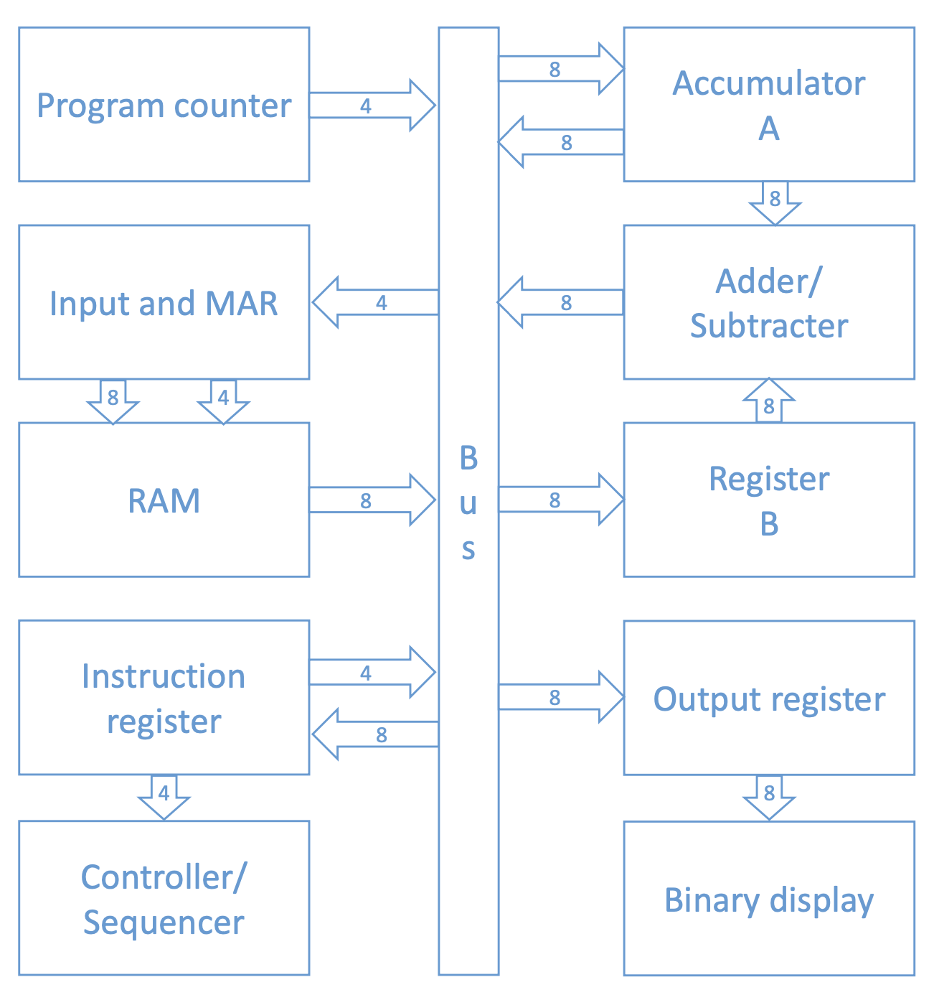
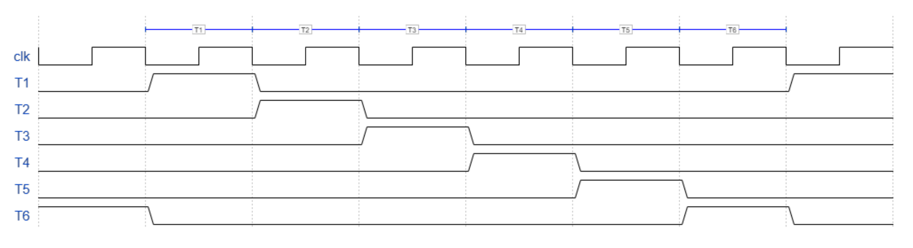
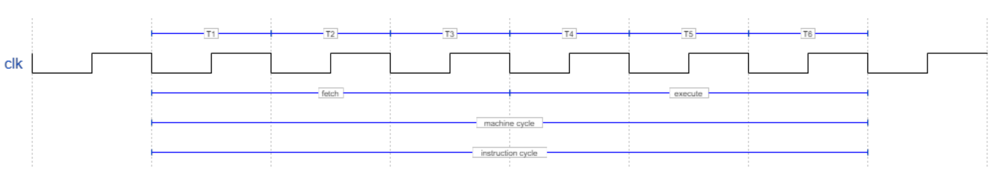

7 SAP-1
The is a computer designed for educational purposes, in order to illustrate the ideas behind the functioning of a modern calculator without providing superfluous details: the name, not by chance, is the acronym for Simple-As-Possible (computer, implied).
We will explore three different generations of SAP, which will follow the evolution towards modern computers. Although primitive, the SAP-1 constitutes a great challenge for a beginner, so it is necessary to understand it thoroughly before moving on to the next generations.
7.1 Architecture
R0.53

The diagram we will refer to is the one shown in figure [fig:sap-1], which however does not take into account the clock, the reset and the various control lines.
We can divide the computer into four units:
(Arithmetic-Logic Unit)
I/O Unit (Input/Output)
The four units are not explicitly shown in the diagram, as it highlights the registers and the connections between them and to the data bus; we will see below which registers will belong to which units.
All connections of the registers with the data bus are made through tristates, in order to allow an orderly transfer of data; all other outputs of the registers are instead two-state, that is, unidirectional communication lines.
Let’s see below the role of the various registers.
: this is a counter that counts from \(0000\) to \(1111\). Its role is to send the address of the instruction to the memory, so that it can be and executed. This register is also called pointer or instruction pointer, as it to the memory address that the computer will have to access, thus keeping track of where the program is.
: this is the interface between the SAP and the memory. Any incoming \(8\)-bit data is loaded into the input register, while the \(4\)-bit memory address (from which to read or in which to write) is loaded into the MAR (Memory Address Register). Due to its dual nature, it is an element that is part of the SAP’s memory, but also of the I/O Unit.
: it is a \(16\times8\) matrix that receives the address from the MAR as input and performs the reading of the data stored in that address; this data is then brought to the bus so that it can be used by other registers. Writing to the RAM, on the other hand, only occurs during the programming phase of the SAP.
: it stores the information read from the RAM; this is then divided in two: the first nibble, representing the instruction to be executed, is sent to the controller/sequencer, while the second nibble, which contains the memory address object of the instruction, is sent back to the bus.
: an element that manages and coordinates the different phases of the instruction execution cycle after receiving the nibble from the instruction register as input. It is also involved in the synchronization of the different units, ensuring that they work in the correct order: at the beginning of the execution of a program, for example, it sends a reset signal to the program counter and the instruction register.
: it temporarily stores the intermediate results of the operations performed; it has direct access to the adder/subtractor, where the arithmetic operations are performed.
: the SAP uses the two’s complement convention to perform sums and differences between numbers. This element is asynchronous, in the sense that it is not coordinated by a clock but performs the operations as soon as it receives the data as input.
: another register in communication with the adder/subtractor, with the role of providing the number to be added (or subtracted) to the content of the accumulator.
Output register: this is the to the , where the content of the accumulator is loaded at the end of the program execution.
Binary display: a row of eight LEDs that shows the user the content of the output register in binary form.
7.2 Instruction set
A computer is a useless pile of electronic components until someone decides to program it. A program is nothing more than a series of instructions that must be loaded into memory before it is executed.
We recall that a data loaded into memory has a total of \(8\) bits, and in case of an operation this byte is divided as follows:
the first nibble is dedicated to the instruction itself (opcode, also called op code)
the second nibble is dedicated to the eventual memory address that is the object of the instruction (operand)
\[ \text{Instruction}=\underbrace{bbbb}_{\text{Op code}}\hspace{0.8mm}\overbrace{bbbb}^{\text{Operand}} \]
The number of instructions and data of the program cannot exceed \(16\), as this is the total number of addresses in memory. For this reason, the memory address is indicated by a single hexadecimal digit.
The SAP-1 has access to a set composed of five different instructions:
(): loads the accumulator with the content inside the indicated memory address.
If the number to be loaded is in address \(0\)x\(8\), the instruction LDA \(0\)x\(8\) will load this number into the accumulator:
\[ R_8=0000\hspace{0.8mm}0011 \ \xrightarrow{\textit{LDA} \ 0\text{x}8} \ A=0000\hspace{0.8mm}0011 \]
: adds to the content of the accumulator the content inside the indicated memory address.
If the number to be added is in address \(0\)x\(D\), the instruction ADD \(0\)x\(D\) will load this number into the B register so that it is added to the number in the accumulator; in the end, the accumulator will contain the sum of the two numbers:
\[ \begin{cases} R_{13}=0010\hspace{0.8mm}0000\\ A=0000\hspace{0.8mm}0011 \end{cases} \xrightarrow{\textit{ADD} \ 0\text{x}D} \ \ A=0010\hspace{0.8mm}0011 \]
: subtracts from the content of the accumulator the content inside the indicated memory address.
If the number to be subtracted is in address \(0\)x\(E\), the instruction SUB \(0\)x\(E\) will load this number into the B register so that it is subtracted from the number in the accumulator; in the end, the accumulator will contain the difference between the two numbers:
\[ \begin{cases} R_{14}=0000\hspace{0.8mm}0001\\ A=0010\hspace{0.8mm}0011 \end{cases} \xrightarrow{\textit{SUB} \ 0\text{x}E} \ \ A=0010\hspace{0.8mm}0010 \]
: copies the content of the accumulator to the output register; it does not require any memory address as an object.
\[ A=0010\hspace{0.8mm}0010 \ \xrightarrow{\textit{OUT}} \ OUT=0010\hspace{0.8mm}0010 \]
(): tells the computer to stop executing the program. It is necessary to place this instruction at the end of every program in the SAP-1, as otherwise unforeseen operations would be obtained caused by uninterrupted processing. It does not require any memory address as an object.
The following table shows the opcodes associated with the five instructions.
7.3 Assembly language
The programming language that we have implicitly used in the examples seen above is the , which requires three elements:
The memory address where the instruction or data is located
The mnemonic, that is the three letters we used to indicate the instruction
The eventual memory address object of the instruction
By convention, all unused memory addresses are set to \(0\)x\(FF\).
Let’s try, for example, to write in assembly language the program described step by step in the description of the instructions.
This program performs the following operation:
\[ 3+32-1 \]
and should return, precisely, \(34\) in binary, that is \(0010\hspace{0.8mm}0010\).
Using the opcode and the operand explicitly, instead, we will get the so-called .
where with X we indicate a nibble that can take any value.
7.4 Timing state
The SAP executes the instructions thanks to the control unit, which sends words - called, precisely, control words - that allow the fetching and execution of the instructions themselves.
As we know, everything is orchestrated by a clock that sends periodic pulses to the system. Each clock cycle marks the transition from one state of the system to the next state: due to their temporal nature, these states are called .
Each timing state is comprised between two falling edges of the clock, and during this period the SAP performs actions such as to modify the content of the registers following what is indicated by the control words.
The timing states are indicated by a ring counter, that is a shift register in which all the bits are set to 0 except for one set to 1, whose position is associated with the timing state itself. As we will see in more detail below, each instruction of the SAP-1 requires at most six timing states to be executed, so the ring counter will consist of six bits, that is, six flip-flops, whose bits scroll as
\[ 000001\to000010\to000100\to001000\to010000\to100000\to000001 \]
Indicating with \(T_i\) the bit associated with the \(i\)-th time state we will then write
\[ T=T_6T_5T_4T_3T_2T_1 \]

7.5 Instruction cycle
We have mentioned the fact that each instruction of the SAP-1 is fetched and executed in a total of - at most - six timing states. In truth, six timing states define what is called a machine cycle; since in the SAP-1 this coincides with the execution period of an instruction, we can also refer to it with the name of , but in general an instruction cycle can use more than one machine cycle.
The instruction cycle is in turn divided into two cycles:
the , common to all instructions, which is responsible for fetching the instruction from memory and bringing it to the controller/sequencer
the , different for each instruction, which is responsible for executing the instruction involving the ALU and the I/O unit
In the SAP-1 both cycles are composed of three timing states. They are also called macroinstructions, in contrast to the control words which are instead called microinstructions; moreover, a microinstruction is associated with each timing state, so each macroinstruction is composed of three microinstructions, and the instruction cycle is composed of six total microinstructions.

7.5.1 Fetch cycle
\(\boldsymbol{T_1}\):
Registers involved: ,
The address indicated by the program counter is sent to the input and MAR.
\(\boldsymbol{T_2}\):
Registers involved:
The program counter is incremented.
\(\boldsymbol{T_3}\):
Registers involved: , ,
The RAM receives the address from the input and MAR, sends the information contained in that address on the bus, being finally collected and stored in the instruction register.
7.5.2 Execution cycles
As mentioned, the execution cycle changes based on the instruction used. In reference to the instructions, we will refer to the execution cycles as routines.
\(\boldsymbol{T_4}\): ,
The opcode is sent to the controller/sequencer, while the operand is loaded into the input and MAR.
\(\boldsymbol{T_5}\): , , ,
The object memory address is loaded into the RAM, the data is extracted and loaded onto the bus to be finally passed to the accumulator.1
\(\boldsymbol{T_6}\): no register is active
State nop (no-operation).
\(\boldsymbol{T_4}\): ,
The opcode is sent to the controller/sequencer, while the operand is loaded into the input and MAR.
\(\boldsymbol{T_5}\): , , ,
The object memory address is loaded into the RAM, the data is extracted and loaded onto the bus to be finally passed to the B register.2
\(\boldsymbol{T_6}\): , , ,
The contents in the accumulator and in the B register are passed to the adder/subtractor where the sum (in case of ADD) or the difference (in case of SUB) will be performed. The result will then be passed to the bus which will copy it back into the accumulator. Since the accumulator works both in output and in input, appropriate delay signals are sent from the control unit during the operation to avoid a possible race competition.
\(\boldsymbol{T_4}\): , , Output register, Binary display
The opcode is sent to the controller/sequencer, while the data from the accumulator is copied to the output register, whose content is shown directly on the binary display.
\(\boldsymbol{T_5}\): no register is active
State nop (no-operation).
\(\boldsymbol{T_6}\): no register is active
State nop (no-operation).
Write a SAP-1 program that executes and displays the result of the arithmetic operation 4+5-3.
If the clock frequency is \(4 \ MHz\), how long does it take to execute this program?
We will have to, in order: load the number \(4\) into the accumulator, add the number \(5\), subtract the number \(3\), and finally send the result to the output on the display.
Given the clock frequency, the time associated with each timing state will be
\[ T=\frac{1}{4\cdot10^6 \ Hz}=250 \ ns \]
The program consists of five instructions; we remember, however, that with the HLT only the fetch cycle is executed, consisting of three timing states, and a final clock cycle after which the execution is interrupted, therefore four total.
Ultimately, the total number of timing states is given by
\[ 6\cdot4+4=28 \]
From which follows the total execution time of the program:
\[ T_{tot}=28\cdot250 \ ns=\num{7000} \ ns=7 \ \mu s \]